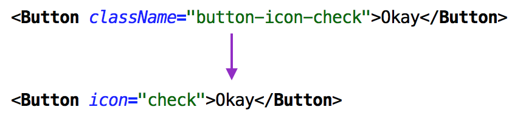
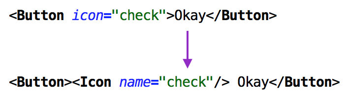

Don’t pass CSS classes between components
The hidden complexity of CSS in modular applications
https://www.flickr.com/photos/veebl/2347345630
The hardest thing when building a large application is managing complexity. You get complexity when lots of parts of your application interact with each other, resulting in a large number of states your program can be in. This makes it harder to reason about your program.
Frameworks like React help us to reduce this complexity by decomposing an application into smaller components which can be reasoned about individually. But unless we are careful, we can still end up with a lot of complexity within our components. Think of that one component that accepts more than 10 properties — isn’t it a pain to work with? Each additional property increases the API surface, causing a combinatorial explosion, which makes it hard to predict how a change to one prop will affect all the possible combinations.
For example, in our codebase at Brigade we have a <Button> component that has grown significantly over time — as these things happen. At one point it took a color string, flat boolean, zDepth integer (a Material Design term), unstyled boolean, light boolean, dark boolean, darkRipple boolean, round boolean, type string, and many more. Besides weird inconsistencies (what does it mean to have <Button dark light>?), it was mostly just hard to change anything. What if we change some shadow, will that still look good for <Button color=”primary-inverted” flat zDepth=”3" round>? Do we even have a button with those properties? The only way to work with such a component is to try to understand how all the different properties interact, and come up with all the possible results in your head, which is impractical.
While a dozen properties is bad, imagine that you suddenly add hundreds of properties to a component. Can you imagine how much complexity that adds? You have no idea how all those properties are being used throughout the application, and what interactions they might have with the changes you are making.
That’s exactly what happens when you pass in a CSS class as a property.
I’ve seen the pattern of passing a CSS class into components a couple of times now. Superficially it makes sense, because it is consistent with the built-in components, and you want to be able to style your components, right? For example, we could have <Button className=”sign-up-submit”>, with corresponding CSS that overrides the global styles for <Button>.
However, that className is complexity in disguise. Once you can give a component any arbitrary CSS class, you can change any of its 315 CSS properties, which has exactly the same problem as adding 315 properties explicitly. With any change you have no idea how it might interact with all the different CSS properties that might be applied to the component throughout the application, making the component very brittle. And if you do this throughout the application, expect styles to break all over the place.

Represent styles as properties.
So what to do instead? First of all, you can make all different styles explicit properties. Unfortunately you can end up with lots of properties, like with our <Button> component, but at least then these properties are explicit — the complexity is not hidden.
For example, we had a <Checkbox> component which took a className, which we used in one case to vertically align a (rather complex) label, and to add an ellipsis if it would overflow. In other cases, however, the label would wrap to the next line. Instead of solving this with className (which actually broke when we changed the component’s styles!) we could expose a wrap property that allows choosing between the wrapping and overflow ellipsis behaviours.

Split components by decomposing them if possible.
The second trick is splitting one component into two or more components, which have sufficiently different styles or behavior. In some cases you can use composition, such as extracting a component that just renders a shadow — which you can then reuse! The only potential downside is that you can get more elements, which in certain rare cases might hurt performance.
To see if a component has a truly small API surface, just look at your test suite. Does it reasonably cover all possible combinations of properties, or does it miss some major use cases? If you have a className property, your tests will most certainly not cover all the things you could do with the component. But CSS classes are only one example of properties in disguise. The same applies to a style property; a function that can alter a component’s rendered output significantly; many references to stateful objects (such as stores); multiple mixins that add properties, and so on.
So, to keep your application maintainable:
- Keep the number of properties of your components to a minimum.
- Don’t sneak in more properties implicitly through className.
- Represent actual different ways a component can look or behave using properties.
- Split out your component into several smaller components that you can compose.
Your application will become easier to reason about, and thus easier to change.